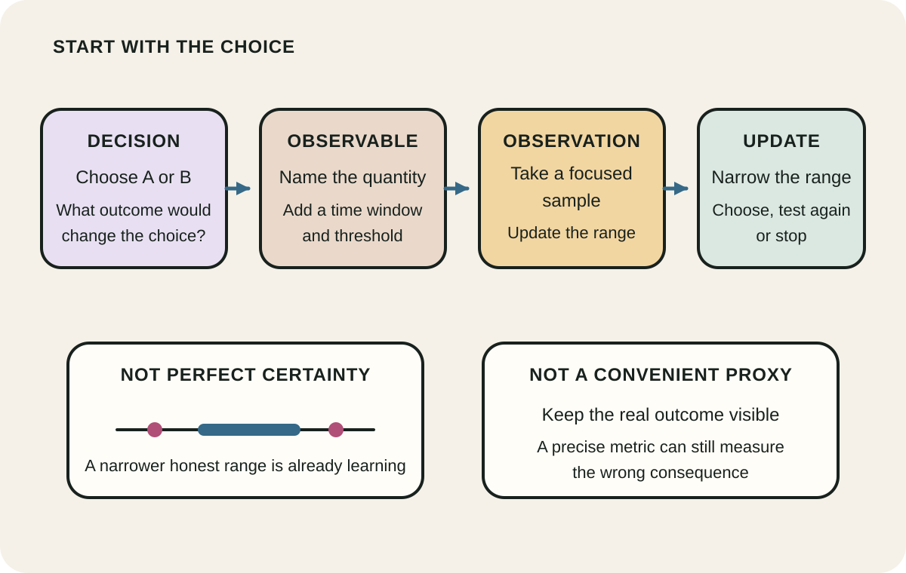
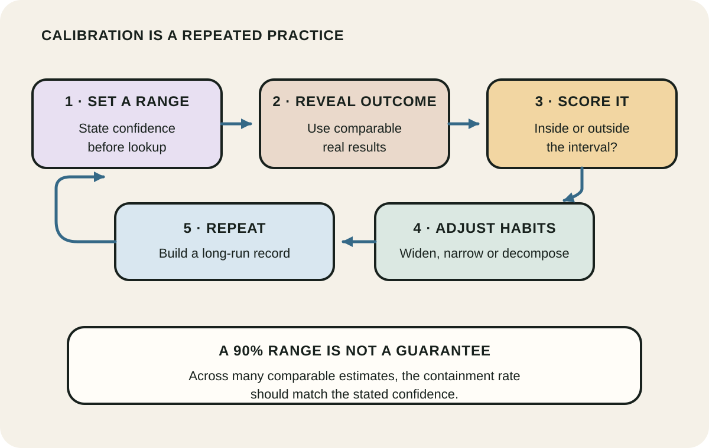
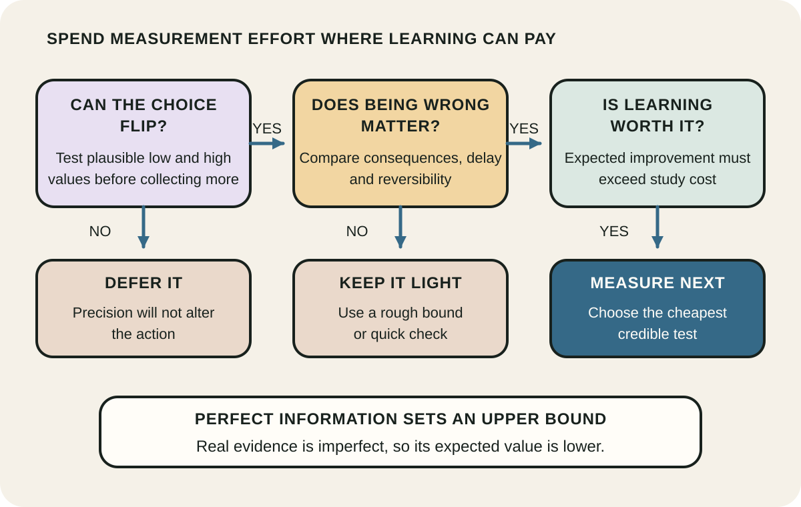

Daily lesson ·
How to Measure Anything
Turn a vague unknown into a decision tool: define what would change the choice, express uncertainty honestly, then buy only the information worth more than it costs.
Idea 1
Measure the decision, not the noun #
The idea
Hubbard defines measurement as a quantitatively expressed reduction in uncertainty based on observations. That definition does not require one exact value. Moving from a very wide plausible range to a narrower one is already a measurement if it leaves you knowing more than before.
He begins by asking which decision the measurement should inform and what observable consequence gives the vague term meaning. A request to measure quality, risk or satisfaction becomes tractable only after naming the choice, the consequence that matters, and a quantity whose possible values could change that choice.

Why it matters
Teams often collect available data and only later ask what it means. Decision-first measurement reverses the sequence. It makes a metric useful or discardable by testing whether a realistic change in its value would alter an action.
Apply it today
Choose one live uncertainty and name the two actions currently under consideration.
Replace the abstract label with one observable outcome, a time window and the threshold at which the preferred action would change.
Caveat or failure mode
Operational definitions can hide important values. A convenient proxy may be precise yet incomplete, and some outcomes are plural or contested rather than reducible to one number. Keep the decision and the construct visible, use multiple observations when needed, and do not let a proxy silently become the goal.
Idea 2
Calibrate the range before narrowing it #
The idea
Hubbard asks estimators to express uncertainty as ranges and probabilities, then test whether their stated confidence matches outcomes across repeated estimates. A person using 90 percent intervals is calibrated when roughly 90 percent of comparable intervals contain the true value over time, not when every interval succeeds.
Calibration is a skill supported by feedback, decomposition and explicit practice. Research on probability judgement finds systematic overconfidence and shows that feedback can improve performance, while also warning that learning may not transfer to dissimilar tasks. A range should therefore communicate honest uncertainty, not decorate a guess with two numbers.

Why it matters
Single-point estimates conceal uncertainty and invite false precision. Calibrated ranges make disagreement inspectable, support simple risk models and create a record that can improve future estimates instead of rewarding lucky guesses.
Apply it today
For one uncertain delivery, cost or demand quantity, write a 90 percent confidence interval before looking up more data.
Name the assumption that sets each boundary and schedule a later check against the observed result.
Caveat or failure mode
A calibrated forecaster can still be wrong on an individual case, and a well-calibrated range may have weak resolution if it is always extremely wide. Feedback from trivia or familiar domains may not transfer to a specialised estimate. Track calibration and usefulness separately, and obtain domain evidence where consequences are high.
Idea 3
Buy information only where it can change the choice #
The idea
Hubbard uses value of information to rank measurement opportunities. The first question is not which uncertainty is largest. It is whether resolving that uncertainty could change the preferred action and improve the expected outcome. A highly uncertain input can have little information value when every plausible value leads to the same choice.
The expected value of perfect information provides an upper bound on what complete resolution of an uncertainty could be worth. Real observations are imperfect, so their expected value is lower. Compare that potential improvement with the cost, delay and risk of obtaining the evidence, then measure the variables with the highest net value first.

Why it matters
Teams can spend weeks improving a visible estimate while ignoring the uncertainty that actually drives a decision. Value of information turns measurement into an allocation problem: learn first where being less wrong is most likely to pay.
Apply it today
List three uncertain inputs in a current decision and test each input at its plausible low and high values.
Circle the inputs that flip the preferred action, then choose the cheapest credible observation whose expected benefit could exceed its cost.
Caveat or failure mode
Information-value calculations inherit the assumptions, probabilities and values in the decision model. They can create false precision when consequences are omitted or moral and strategic concerns are forced into a crude monetary score. Use rough bounds for small decisions, expose value judgements, and revisit the model when new options appear.
Knowledge check · 6 questions
Learning check
Answer all 6, then check your answers. Your first result stays in this browser, and each explanation appears after you check. A 3-question review can appear on the homepage from tomorrow.
6 questions not yet answered.
Today's experiment · 10 minutes
Write a decision-first measurement brief
- Minutes 0 to 2: name one pending choice and the two most credible alternatives.
- Minutes 2 to 4: define one observable outcome and the threshold that would change the choice.
- Minutes 4 to 6: write a 90 percent range for that outcome and note what sets each boundary.
- Minutes 6 to 8: test whether the preferred action changes at the low and high ends of the range.
- Minutes 8 to 10: if it changes, choose one cheap observation and a stop rule; if it does not, name the next uncertainty to test.
Observable result: A one-page brief showing the decision, observable quantity, honest range, sensitivity result and next measurement or stop rule.
Retrieval practice
Spaced recall
- From Noise: how would you distinguish unwanted variation between judges from genuine uncertainty in the outcome they are estimating?
- From Range: what structural analogy could help you estimate an unfamiliar quantity without copying a superficial match?
- From Your Money or Your Life: which spending decision might change if its true cost were measured in life energy rather than dollars alone?
Verification
Source notes
These links support the attributed claims and edition details; applications and extensions are labelled in the lesson.
- Wiley: How to Measure Anything, third edition companion and contents
- Wiley excerpt: How to Measure Anything, third edition
- Hubbard Decision Research: seven principles for measuring anything
- Lichtenstein, Fischhoff and Phillips: calibration and overconfidence research
- Lichtenstein and Fischhoff: training for calibration and limits to transfer
- Cambridge University Press: uncertainty, sensitivity analysis and value of information
One-sentence takeaway